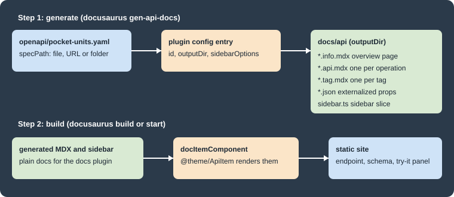

OpenAPI Docs
|
This content was generated with the assistance of AI and should be verified against the official documentation before being relied on in production. |
This page was written against Docusaurus 3.10.2 (the last release of the 3.x line), docusaurus-plugin-openapi-docs 5.2.0
and docusaurus-theme-openapi-docs 5.2.0, and checked on 2026-10-26. Docusaurus itself does not render OpenAPI files. The
feature comes from a community project, maintained in the PaloAltoNetworks GitHub organization and published to npm as a
plugin and a theme; it is not part of the Docusaurus project and is not covered by the Docusaurus documentation. The running
example is the documentation site of Pocket Units, the small units-conversion library with a C# and a Python implementation,
for which this page imagines a small HTTP service that exposes two operations.
What the plugin does and why it is split in two
Writing a reference page for every endpoint of an API by hand does not scale and drifts from the code. The plugin turns an OpenAPI file (the plugin supports Swagger 2.0 and OpenAPI 3.x according to its README) into ordinary Docusaurus documents. It works in two separate steps, shown in the figure.

-
docusaurus-plugin-openapi-docsadds commands to the Docusaurus CLI. They read the specification and write MDX files, small JSON files and a sidebar file into a folder of your site. This is a generation step that you run yourself; a plaindocusaurus builddoes not run it. -
docusaurus-theme-openapi-docsprovides the React components that those MDX files import (@theme/ApiItem,@theme/ParamsDetails,@theme/RequestSchema,@theme/StatusCodesand others) and the styling. It also provides the interactive request panel of each operation page.
The generated files are regular documents of the docs plugin, so they take part in the sidebar, search, versioning and broken-link checks of the site like any other document.
Compatibility and installation
The plugin and the theme are released together and each major version is tied to a range of Docusaurus versions. The compatibility table of the README is reproduced here.
| docusaurus-plugin-openapi-docs | Docusaurus |
|---|---|
5.x.x (current) |
3.10.0 and later |
4.x.x (legacy) |
3.5.0 to 3.9.2 |
3.0.x (end of support) |
3.0.1 to 3.4.0 |
2.2.3 (end of support) |
2.4.1 to 2.4.3 |
1.7.3 (end of support) |
2.0.1 to 2.2.0 |
The peer dependencies declared by 5.2.0 confirm this: the plugin asks for @docusaurus/plugin-content-docs,
@docusaurus/utils and @docusaurus/utils-validation at version 3.10.0 or later, and the theme asks for
@docusaurus/theme-common at 3.10.0 or later and for docusaurus-plugin-sass 0.2.3 or later. Both packages declare Node.js 14 or later as their own engine, but a Docusaurus
3.10 site needs Node.js 20 anyway. The packages are MIT licensed. A site that stays on Docusaurus 3.9 or older must use a
4.x release of the plugin.
Install both packages and the Sass plugin that the theme needs (the scratch site used for this page ran these exact versions):
npm i -E docusaurus-plugin-openapi-docs@5.2.0 docusaurus-theme-openapi-docs@5.2.0 docusaurus-plugin-sass@0.2.6 sassSource: docusaurus-openapi-docs README
For a new site, the README also describes npx create-docusaurus-openapi-docs my-website, which bootstraps a classic site
with the Petstore example. Its options are -p, --package-manager <manager> (yarn, npm, pnpm or bun) and
-s, --skip-install. That bootstrap command was not run for this page.
The example specification
The OpenAPI file of the example describes two operations: a GET on /units that lists the units the service knows, and a
POST on /convert that converts a value. It has two tags, an API key security scheme and a vendor extension with a curl
sample. The file is saved as openapi/pocket-units.yaml in the site.
openapi: 3.0.3
info:
title: Pocket Units API
version: 1.0.0
description: |
A tiny HTTP API that converts values between length and mass units.
license:
name: MIT
servers:
- url: https://api.pocket-units.example/v1
tags:
- name: units
description: Unit catalog
- name: conversions
description: Value conversion
paths:
/units:
get:
tags: [units]
operationId: listUnits
summary: List the supported units
description: Returns every unit the service can convert.
parameters:
- name: dimension
in: query
description: Restrict the list to one dimension.
schema:
$ref: '#/components/schemas/Dimension'
responses:
'200':
description: The supported units.
content:
application/json:
schema:
type: array
items:
$ref: '#/components/schemas/Unit'
/convert:
post:
tags: [conversions]
operationId: convert
summary: Convert a value
description: Converts a value from one unit to another unit of the same dimension.
security:
- apiKey: []
requestBody:
required: true
content:
application/json:
schema:
$ref: '#/components/schemas/ConversionRequest'
example:
value: 12.5
from: km
to: mi
responses:
'200':
description: The converted value.
content:
application/json:
schema:
$ref: '#/components/schemas/ConversionResult'
'422':
description: The units belong to different dimensions.
content:
application/json:
schema:
$ref: '#/components/schemas/Error'
x-codeSamples:
- lang: bash
label: curl
source: |
curl -X POST https://api.pocket-units.example/v1/convert \
-H "X-API-Key: <YOUR_API_KEY>" \
-H "Content-Type: application/json" \
-d '{"value": 12.5, "from": "km", "to": "mi"}'
components:
securitySchemes:
apiKey:
type: apiKey
in: header
name: X-API-Key
schemas:
Dimension:
type: string
enum: [length, mass]
Unit:
type: object
required: [symbol, dimension]
properties:
symbol:
type: string
example: km
name:
type: string
example: kilometre
dimension:
$ref: '#/components/schemas/Dimension'
ConversionRequest:
type: object
required: [value, from, to]
properties:
value:
type: number
from:
type: string
to:
type: string
ConversionResult:
type: object
properties:
value:
type: number
example: 7.767
unit:
type: string
example: mi
Error:
type: object
properties:
message:
type: stringSource: docusaurus-openapi-docs README
The service is fictional (the host name is a placeholder); the file is only an input for the generator.
Configuring the plugin and the theme
Three places of docusaurus.config.ts change. The docs plugin must use the @theme/ApiItem component to render documents
(docItemComponent), the plugin is declared with one entry per specification, and the theme is added to themes.
import {themes as prismThemes} from 'prism-react-renderer';
import type {Config} from '@docusaurus/types';
import type * as Preset from '@docusaurus/preset-classic';
import type * as OpenApiPlugin from 'docusaurus-plugin-openapi-docs';
const config: Config = {
title: 'Pocket Units',
url: 'https://your-docusaurus-site.example.com',
baseUrl: '/',
future: {v4: true},
onBrokenLinks: 'throw',
presets: [
[
'classic',
{
docs: {
sidebarPath: './sidebars.ts',
docItemComponent: '@theme/ApiItem',
},
theme: {customCss: './src/css/custom.css'},
} satisfies Preset.Options,
],
],
plugins: [
[
'docusaurus-plugin-openapi-docs',
{
id: 'api',
docsPluginId: 'classic',
config: {
pocket: {
specPath: 'openapi/pocket-units.yaml',
outputDir: 'docs/api',
sidebarOptions: {
groupPathsBy: 'tag',
categoryLinkSource: 'tag',
},
} satisfies OpenApiPlugin.Options,
},
},
],
],
themes: ['docusaurus-theme-openapi-docs'],
};
export default config;Source: docusaurus-openapi-docs README
The complete site, with this configuration and the specification above, passed tsc and docusaurus build with Docusaurus
3.10.2 and the future.v4 flag that a new site already contains. The README adds that a dedicated
@docusaurus/plugin-content-docs instance may be used instead of the preset, again with docItemComponent set to
@theme/ApiItem. Setting that component site-wide means that every document of that docs instance goes through
ApiItem; a separate docs instance for the API would leave the rest of the documentation on the stock component. This page ran
only the preset variant.
Plugin options
The plugin entry takes three options besides config.
| Option | Meaning |
|---|---|
|
A unique id for the plugin instance. |
|
The plugin used to render the generated documents. Defaults to |
|
The id of the preset or docs plugin instance that renders the documents, for example |
The config object maps an id of your choice (here pocket) to the options of one specification. The id is what you pass to
the commands later. The options documented in the README are:
| Option | Meaning |
|---|---|
|
A path, a URL or a directory with several specification files. |
|
The folder that receives the generated MDX and sidebar files. |
|
A proxy URL put in front of the server URL when the browser sends a request; overrides the site-wide
|
|
Custom MDX templates for all pages, only the info page, only tag pages or only schema pages. |
|
A URL from which readers download the specification (the README says this needs the info page). |
|
When |
|
When |
|
Defaults to |
|
Sidebar generation options, below. |
|
Versioning options, below. |
|
Functions that replace the body of API, info, tag or schema pages: |
|
When |
|
Defaults to |
|
Defaults to |
|
Defaults to |
Sidebar options
When sidebarOptions is present, the generator writes a sidebar.ts file next to the pages.
| Option | Meaning |
|---|---|
|
Groups the sidebar by |
|
What a category links to when paths are grouped by tag: |
|
Defaults to |
|
Defaults to |
|
Extra properties for a sidebar item. |
|
Callbacks; |
The x-position vendor extension of an operation, or a position front matter field, fixes the order of items in the
sidebar.
Theme options
The theme is configured under themeConfig.api.
themeConfig: {
api: {
authPersistence: 'sessionStorage',
requestTimeout: 30000,
requestCredentials: 'same-origin',
schemaExpansion: {enabled: true, default: 1, max: 4},
},
},Source: docusaurus-openapi-docs README
The values shown are the documented defaults, except schemaExpansion, which is unset by default. This fragment was not
built on its own.
| Option | Default | Meaning |
|---|---|---|
|
none |
Site-wide proxy put in front of the base URL for requests sent from the browser. |
|
|
Where credentials entered in the demo panel are kept: |
|
30000 |
Timeout in milliseconds of browser requests. |
|
|
The cookie policy of requests: |
|
unset |
How deep nested schemas expand: |
Generating the pages
The commands are added to the Docusaurus CLI by the plugin, so they appear next to build and start.
| Command | Effect |
|---|---|
|
Generates the MDX files and the sidebar for one configuration id. With |
|
Generates versioned docs and updates |
|
Removes the generated files; also takes |
|
Removes the versioned files. |
Source: docusaurus-openapi-docs README
Running the generator for the example produced this output.
npx docusaurus gen-api-docs allSuccessfully created "docs/api"
Successfully created "docs/api/sidebar.ts"
Successfully created "docs/api/pocket-units-api.info.mdx"
Successfully created "docs/api/list-units.ParamsDetails.json"
Successfully created "docs/api/list-units.RequestSchema.json"
Successfully created "docs/api/list-units.StatusCodes.json"
Successfully created "docs/api/list-units.api.mdx"
Successfully created "docs/api/convert.RequestSchema.json"
Successfully created "docs/api/convert.StatusCodes.json"
Successfully created "docs/api/convert.api.mdx"
Successfully created "docs/api/units.tag.mdx"
Successfully created "docs/api/conversions.tag.mdx"Each operation produced an .api.mdx page named after its operationId (converted to kebab case), the info page was named
after the title of the specification, and each tag produced a .tag.mdx page. Passing an id that is not configured
fails with the message ID 'nope' does not exist in OpenAPI docs config.
The beginning of a generated operation page shows how the pieces fit together.
---
id: convert
title: "Convert a value"
description: "Converts a value from one unit to another unit of the same dimension."
sidebar_label: "Convert a value"
hide_title: true
hide_table_of_contents: true
api: <encoded operation data>
sidebar_class_name: "post api-method"
info_path: docs/api/pocket-units-api
custom_edit_url: null
---
import MethodEndpoint from "@theme/ApiExplorer/MethodEndpoint";
import ParamsDetails from "@theme/ParamsDetails";
import RequestSchema from "@theme/RequestSchema";
import StatusCodes from "@theme/StatusCodes";Source: docusaurus-openapi-docs README
The api field holds the whole operation in an encoded form that ApiItem decodes in the browser, which is why generated
files are not meant to be edited by hand. A hand-written change is lost the next time the generator runs.
The generated folder is also the folder that clean-api-docs empties. According to the README it removes only the file
types the generator writes (*.api.mdx, *.info.mdx, *.tag.mdx, sidebar.ts, sidebar.js, schemas/*.schema.mdx and
the externalized JSON), and leaves other files such as a hand-written _category_.json. Running it on the example removed
the generated files, including sidebar.ts.
Using the generated sidebar
The generator writes a sidebar slice, docs/api/sidebar.ts, whose default export is an array of items (the info page,
then one category per tag). The site imports it into sidebars.ts.
import type {SidebarsConfig} from '@docusaurus/plugin-content-docs';
import apiSidebar from './docs/api/sidebar';
const sidebars: SidebarsConfig = {
tutorialSidebar: ['intro'],
apiSidebar,
};
export default sidebars;Source: docusaurus-openapi-docs README
A navbar item with type: 'docSidebar' and sidebarId: 'apiSidebar' links to it. The generated slice for the example
was:
const sidebar: SidebarsConfig = {
apisidebar: [
{type: "doc", id: "api/pocket-units-api"},
{
type: "category",
label: "units",
link: {type: "doc", id: "api/units"},
items: [
{
type: "doc",
id: "api/list-units",
label: "List the supported units",
className: "api-method get",
},
],
},
{
type: "category",
label: "conversions",
link: {type: "doc", id: "api/conversions"},
items: [
{
type: "doc",
id: "api/convert",
label: "Convert a value",
className: "api-method post",
},
],
},
],
};
export default sidebar.apisidebar;Source: docusaurus-openapi-docs README
The className values (api-method get, api-method post) are what the theme styles to show the HTTP method badge in the
sidebar. Because sidebars.ts imports the generated file, the build fails when the file does not exist: run
gen-api-docs (or commit the generated folder) before docusaurus build or docusaurus start, including in CI. The
sidebar can also be left to autogenerated, but then the tag grouping and the method badges of the generated slice are
lost.
Building the site
With the files generated, the ordinary build renders them.
npx docusaurus build[INFO] [en] Creating an optimized production build...
[SUCCESS] Generated static files in "build".
[INFO] Use `npm run serve` command to test your build locally.The build produced build/docs/api/pocket-units-api, build/docs/api/units, build/docs/api/list-units,
build/docs/api/conversions and build/docs/api/convert, one folder with an index.html for each generated page. The
interactive "Send API Request" panel is rendered in the browser, and no live request was sent from it for this page.
Vendor extensions and tags
The plugin reads several vendor extensions from the specification. This list comes from the README; only x-codeSamples was
used in the example above.
| Extension | Purpose |
|---|---|
|
Code snippets of an operation shown in the API explorer. |
|
Groups tags in the sidebar. |
|
Assigns tags to schema objects so they appear with tagged operations. |
|
Orders items in the sidebar. |
|
Logos for the light and dark themes on the intro page. |
|
Text shown for deprecated operations. |
|
Defines webhook events. |
|
Overrides the display name of a tag. |
|
Documents enum values. |
Other Redoc-specific extensions such as x-circular-ref, x-examples, x-nullable and x-servers are ignored; the
deprecated spelling x-code-samples is among them.
Several specifications and versions
The config object may hold several entries, each with its own specPath and outputDir, to document several APIs or to
split one large API into micro specifications. The specPath can be a directory of files. With several entries, give each
its own sidebar slice and set categoryLinkSource to info if each should link to its own overview.
To document several versions of the same API, the entry takes version, label and baseUrl for the current version and
a versions object for the older ones. Each version has specPath, outputDir, label, baseUrl and optionally
downloadUrl, and inherits the sidebarOptions of the parent entry. A run with a version added to the example gave this
versions.json after docusaurus gen-api-docs:version pocket:all:
[
{"version": "2.0.0", "label": "v2", "baseUrl": "/docs/api"},
{"version": "1.0.0", "label": "v1", "baseUrl": "/docs/api_versioned/1.0.0"}
]Source: docusaurus-openapi-docs README
The older version was written to docs/api_versioned/1.0.0 with its own sidebar.ts whose document ids start with
api_versioned/1.0.0/. This version mechanism belongs to the plugin and is separate from the Docusaurus docs versioning that
docusaurus docs:version creates; see Versioning for the latter. The
version selector dropdown that the README mentions was not rendered in this run.
Pitfalls and version notes
-
Generated files are build inputs. Decide whether to commit the output folder or to generate it in CI before the build, and do the same everywhere, because
sidebars.tsimports a generated file. -
A change of the specification does nothing until
gen-api-docsruns again. Runclean-api-docsfirst when operations were removed, so that the folder holds only files of the current specification. -
The plugin and the theme are major-version coupled to Docusaurus. Moving from Docusaurus 3.9 to 3.10 means moving from plugin 4.x to 5.x, and the theme must be upgraded with it.
-
maskCredentialsdefaults totrue, so generated snippets hide credentials. The demo panel keeps what a reader enters insessionStorageby default;authPersistence: 'localStorage'keeps it longer in the browser. -
Requests sent from the demo panel go from the reader’s browser to the server named in the specification, so the server needs a cross-origin policy that allows it, or the
proxyoption has to point to a proxy that does. The README shows a proxy URL of the maintainers' own as an example; do not send private credentials through a proxy you do not control. -
Because this is a community project, features and release cadence follow its maintainers, not the Docusaurus release schedule. Check its repository for open issues before relying on a feature.